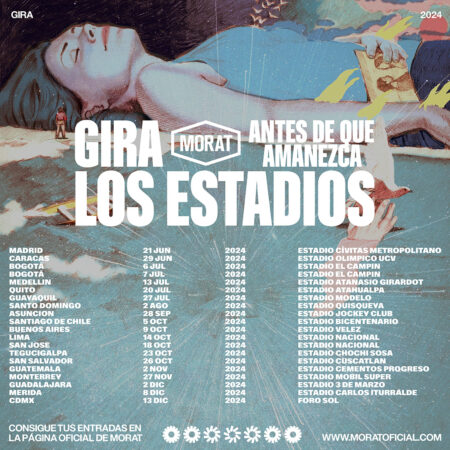

Gira los estadios
MORAT ANUNCIA «LOS ESTADIOS. ANTES DE QUE AMANEZCA» CON MAS DE 15 FECHAS
Morat, la banda que ha cautivado corazones en todo el mundo, presenta su nueva gira “Morat: Los Estadios». Antes de Que Amanezca”, una gira que promete no solo romper récords, sino también marcar un hito en la historia musical.
Tras finalizar la gira “Si ayer fuera hoy Morat World Tour” con más de 1.000.000 de asistentes consiguiendo sold out en todas las fechas, incluyendo 2 Estadios Atanasio Girardot, 3 Palacios de los deportes en CDMX, sold out en las principales ciudades europeas como París, Ámsterdam, Roma… además de la exitosa gira por US con sold out en Nueva York y el Kaseya Center en Miami entre otras múltiples ciudades y arenas, MORAT llega al momento de su carrera donde presenta una gira de únicamente estadios.
La magnitud de “Los Estadios” se refleja en la elección de venues emblemáticos en cada ciudad, desde el Civitas Metropolitano en Madrid hasta los estadios más imponentes de México, Colombia, Argentina, Perú, Paraguay, Venezuela, Ecuador, República Dominicana, Honduras, El Salvador, Guatemala, Costa Rica y Chile. Morat, conocidos por vender dos estadios, El Campín en Bogotá, en un asombroso lapso de 24 horas, está listo para llevar su música a una escala sin precedentes.
Este no es solo una gira, es una experiencia que redefine la relación entre la banda y sus seguidores. “Morat: Los Estadios” no solo destaca los éxitos inolvidables de Morat, como “Besos en Guerra”, “Amor con Hielo” y “Cómo te atreves”, sino que también introduce un formato de producción diseñado exclusivamente para estadios. Desde efectos visuales espectaculares hasta una calidad de sonido incomparable, cada detalle ha sido cuidadosamente elaborado para elevar la experiencia a nuevas alturas.
Los boletos para “Los Estadios. Antes de Que Amanezca” estarán disponibles próximamente, brindando a los fans la oportunidad de ser parte de esta experiencia inolvidable.
A continuacion mostramos las fechas de la gira:
Volver al Blog